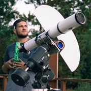

Team
Faculty and Post Docs
Norbert Werner
Group Head
Jakub Ripa
GRB Specialist
Martin Topinka
Machine Learning Specialist
Filip Munz
Particle Astrophysicist
PhD Students
RG

MK
JP

The High Energy Astrophysics Group is a new research group within Masaryk University in Brno, Czech Republic. We are an international research group focused on the hot and energetic Universe over multiple wavelengths and physical scales. We bridge obvervational, theoretical, and computational fields over a broad array of disciplines.
EDIT THIS:: Our group was created in 2020 with the financial support of European Stuctural and Investment Funds, and Czech state funds of the Ministry of Education, Youth and Sports, the European Research Council, and the Czech Science Foundation.
Most of the Universe consists of dark energy and dark matter, which are hidden from our view. However, even most of the “ordinary matter”, made of standard-model particles, remains unseen and unexplored. In the course of structure formation, only a small fraction of the baryons turned into stars - most remain in the form of a hot, strongly ionised, low-density, X-ray emitting plasma. In the innermost parts of galaxies this plasma is often referred to as interstellar medium (ISM), at large radii, well beyond the stellar component, as circumgalactic medium (CGM), in groups of galaxies as intragroup medium (IGrM), in clusters of galaxies as intracluster medium (ICM), and in the filaments of the cosmic web as intergalactic medium (IGM) or warm-hot intergalactic medium (WHIM). Since the hot phases of all these media share crucial similarities, we will refer to them at all scales as hot atmospheres. They can be best probed by observations at soft X-ray energies, which require spaceborne observatories, or using ground based mm-observations using the Sunyaev-Zeldovitch (SZ) effect.
Studies of the role of the hot galactic atmospheres and accreting supermassive black holes in galaxy evolution. We use proprietary and public multi-wavelength, mostly X-ray and radio, data to study nearby early-type galaxies and test various predictions of the so-called “precipitation” and black hole feedback models, and compare our data with state of the art numerical simulations.
Determine the dynamics, thermodynamics, and the chemical composition of the hot plasma by using multi-wavelength X-ray, SZ, and radio observations. We use mostly X-ray observations of cluster outskirts and merging galaxy clusters and complement these data with SZ and radio observations. We also study mock X-ray observations of state-of the-art cosmological simulations with existing and planned high-resolution X-ray observatories. Our group is involved in the scientific preparations for the Athena mission.
Use of machine learning to study the evolution of galaxies, clusters of galaxies, and the large scale structure of the Universe. We are also looking forward to observations of the evolution of the earliest massive galaxies and their central black holes using the James Webb Space Telescope (JWST).
Among the most important breakthroughs of the past years is the detection of gravitational waves by the Laser Interferometer Gravitational-wave Observatory (LIGO) and Virgo. In particular, the recent detection of the short gamma-ray burst GRB170817A associated with the gravitational wave signal GW170817 and produced by a binary neutron star merger, marks a milestone in multi-messenger astrophysics and highlights the importance of the efforts to search for electromagnetic counterparts to gravitational wave sources with space-borne instruments. Modern space observatories monitoring GRBs grew into several hundred million Euro missions. However, miniaturization recently opened new opportunities to monitor and localize GRBs with CubeSats (nano-satellites), which are affordable also for small countries and universities. Our group is involved in the HERMES-SP project and the CAMELOT initiative, including two in-orbit demonstration missions, GRBAlpha and VZLUSAT-2, to be launched in the first half of 2021.
Our goal is to demonstrate that monitoring and timing based localization of gamma-ray bursts, some of which are the electromagnetic counterparts of gravitational wave events, can be performed using CubeSats. Together with our international collaborators (Konkoly Observatory, INAF, ELTE, VZLU), we are helping to develop CubeSat missions that are able to perform breakthrough science in the field of High-Energy Astrophysics.
Our group also hopes to be a bridge between astrophysics and theoretical physics, exploring exotic phenomena such as the quantum structure of space and microscopic black-holes.
Faculty and Post Docs
PhD Students
Norbert is an astrophysicist, an associate professor (Docent) and the leader of the High-Energy Astrophysics research group. He is mainly interested in the hot atmospheres of galaxies and clusters of galaxies, black hole feedback, and in the use of nano-satellites in astrophysics.
Norbert earned his PhD at the Netherland's Institute for Space Research and Utrecht University in 2008, where he mainly worked on the physics and chemical enrichment of the hot gas permeating clusters of galaxies and the cosmic web. Then he spent 8 years at Stanford University, in the beautiful San Francisco Bay Area, mainly studying the influence of supermassive black holes on the hot gaseous haloes, investigating the faint and mysterious cluster outskirts, and working on preparations for the science with the Japanese ASTRO-H/Hitomi satellite. Between 2016 and 2020 he was the leader of the MTA-ELTE Lendulet Hot Universe research group in Budapest, where he helped to initiate the development of CubeSats to detect gamma-ray bursts.
Norbert and his team now continue their research activities in the Department of Theoretical Physics and Astrophysics thanks to the MUNI Award in Science and Humanities (MASH) grant from Masaryk University and an EXPRO grant from the Czech Science Foundation.
Last updated 3 mins ago

Jakub received his PhD in 2011 at Charles University (Prague, Czech Rep.) where he worked on the statistical studies of gamma-ray bursts (GRBs). Then he became a postdoctoral researcher in the Ewha Womans University (Seoul, Korea) and in the Sungkyunkwan University (Suwon, Korea) where he mainly worked on preparation of the UFFO-Pathfinder GRB instrument which was launched on the Lomonosov satellite. Then he moved to the National Taiwan University (Taipei, Taiwan) where he worked on testing the isotropy of the Universe using GRBs. There he also worked on the Taiwan Astroparticle Radiowave Observatory for Geo-synchrotron Emissions (TAROGE) for the detection of ultra-high energy cosmic rays (UHECR) and on the ANtarctic Impulsive Transient Antenna (ANITA) which was a long-duration balloon experiment to detect ultrahigh-energy neutrinos (UHEN). Next he moved back to the Czech Republic to the Charles University for a postdoctoral position.
He is now working at the Department of Theoretical Physics and Astrophysics at Masaryk University and in the Eötvös Loránd University (Budapest, Hungary) where he continues his research on GRBs and works on the development of CubeSats capable of detection and localization of GRBs. These projects are HERMES, CAMELOT, GRBAlpha and the GRB instrument on board of the VZLUSAT-2. His fields of expertize are GRBs, instrumentation for their detection and statistical methods for data analysis.
Last updated 3 mins ago
AHEAD2020 builds on our previous program, funded in H2020 as starting community, that allowed us to qualify now as advanced community. Our overall objective remains to advance further the integration of national efforts in high-energy astrophysics keeping the community at the cutting edge of science and technology and ensuring that observatories are at the state of the art. At the same time, AHEAD2020 aims at widening its horizons to further integrate activities with the newly born multimessenger astronomy, boosted very recently by the discovery of gravitational waves and cosmic neutrinos and of their first high energy counterparts. This will be achieved by a new large community of high energy astronomers, gravitational wave and astroparticle scientists. Along the road paved until recently, we will keep strengthening the theorethical efforts, also building up on the results of the observations of multimessenger sources; and continue opening the best infrastructures for data analysis of high-energy space and ground observatories. Furthermore we will integrate key infrastructures for on-ground test and calibration of spacebased instrumentation and promote their coordinated use. Technological developments will focus on the improvement of selected detector, optics devices and advanced analysis tools for the benefit of future space missions and groundbased multimessenger facilities, with more emphasis on the observation of the new transient Universe.
The mergers in Abell 2256: displaced gas and its connection to the radio-emitting plasma -- PDF -- Supplement
Breuer, J. P.; Werner, N.; Mernier, F.; Mroczkowski, T.; Simionescu, A.; Clarke, T. E.; ZuHone, J. A.; Di Mascolo, L.
Space Radiation and Plasma Effects on Satellites and Aviation: Quantities and Metrics for Tracking Performance of Space Weather Environment Models -- Article (image credit)
Zheng, Y.; Ganushkina, N. Y.; Jiggens, P.; Jun, I.; Meier, M. M.; Minow, J. I.; O'Brien T. P.; Pitchford, D.; Shprits, Y. Y.; Tobiska, W. K.; Xapsos, M. A.; Guild, T. B.; Mazur, J. E.; Kunetsova, M. M.
Studentship at European Southern Observatory - Worked on developing a Bayesian joint forward modelling method for combining X-ray spatially resolved spectroscopic data and Sunyaev Zeldovich observations of galaxy clusters.
Internal Grant Agency of Masaryk University - Working on some particle simulation work for the magnetic diverter instrument in the upcoming Athena mission. The goal is to better understand the particle scattering, ionizing interactions, and related secondary background contribution.
Atacama Pathfinder Experiment (APEX) mm/sub-mm observation experience in Chile for two weeks.
IRAM 30 meter telescope mm/sub-mm observation experience in Spain for one week.
High Energy Astrophysics Group
Department of Theoretical Physics and Astrophysics
Kotlářská 2, 602 00, Brno
Czech Republic